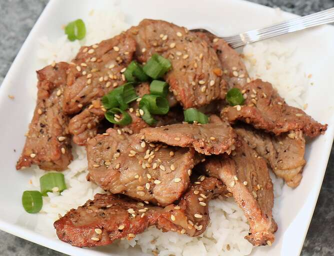

Bulgogi

This restaurant-worthy beef bulgogi recipe is easy to make and impossible to resist. A sweet and savory marinade, made with ingredients you probably already have on hand, ensures melt-in-your-mouth bulgogi every time.
Ingredients
5 tablespoons soy sauce
¼ cup chopped green onion
2 ½ tablespoons white sugar
2 tablespoons minced garlic
2 tablespoons sesame seeds
2 tablespoons sesame oil
½ teaspoon ground black pepper
1 pound flank steak, thinly sliced
Instructions
- Gather all ingredients.
- Whisk soy sauce, green onion, sugar, garlic, sesame seeds, sesame oil, and pepper together in a bowl.
- Place flank steak slices in a shallow dish. Pour marinade over top. Cover and refrigerate for at least 1 hour or overnight.
- Preheat an outdoor grill for high heat, and lightly oil the grate.
- Quickly grill flank steak slices on the preheated grill until slightly charred and cooked through, 1 to 2 minutes per side.
- Serve hot and enjoy!